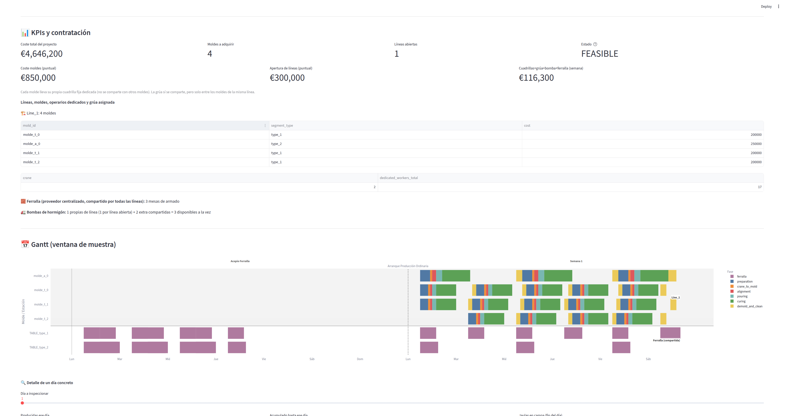
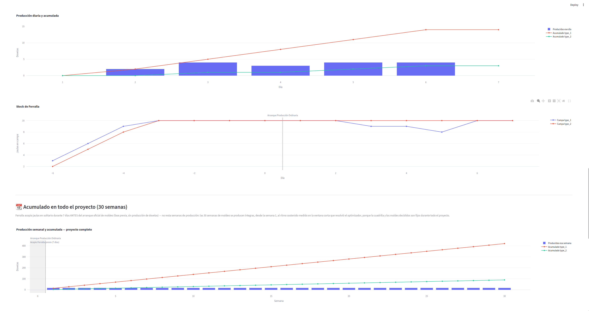

Digital Twin and Optimization Engine for a Precast Concrete Plant
Lead developer · Optimization engineer (operations research)
Designed and built from scratch as a digital twin and mathematical optimization engine for an industrial precast concrete plant (bridge segments and beams). It replaces manual planning with a constraint-programming engine that produces realistic production Gantt charts, cutting operating cost while respecting physical, staffing and supply-chain constraints.
Gallery


The challenge
Planning a precast factory runs into hard bottlenecks: shared cranes, crew limits, strict working hours and curing times that cannot be shortened. The model had to find not only a valid production sequence, but a financially optimal one, and it had to stay computationally tractable instead of exploding like a typical job-shop scheduling problem.
Solution architecture
Performance and scale come from a two-layer design:
- Short-term optimization core (steady regime). A Google OR-Tools (CP-SAT) model that solves the production week. It handles physical constraints in minutes and hours and decides how resources and crews are used.
- Long-term inventory simulation (discrete simulation). Yard storage and rebar supply stay outside the solver, so the optimizer is not loaded with multi-month windows. A deterministic Python simulator, based on Little's law (L = λW) and FIFO queues, takes the optimizer output and projects physical occupancy over the life of the project.
Innovations
- Financial objective. Labour cost, including overtime, is part of the objective. The solver decides when starting early or extending a shift is cheaper than new infrastructure.
- Symmetry breaking. Constraints force production lines to fill in sequence, shrink the search space and reach stable solutions in milliseconds.
- Strict task contiguity. Equalities chain preparation, crane use and pouring. Crew idle gaps disappear and the Gantt stays dense and realistic at plant level.
- Dynamic resource queues. Cumulative variables for cranes and crews, without fixed time anchors, so concurrent work is spread smoothly.
- Management interface. Plant managers set maximum capacities and holding times, and review storage-overload alerts, without changing the optimizer rules.
Technology stack
- Python 3.11
- Google OR-Tools (CP-SAT solver)
- Streamlit (Gantt, inventory occupancy and scenario setup)
- Git
Corporate development under confidentiality. The source code is not published.
Impact
The tool removes guesswork from plant planning. It forecasts labour cost, sizes storage yards from long-term projections, and supports delivery dates with a model that is physically and mathematically checkable.